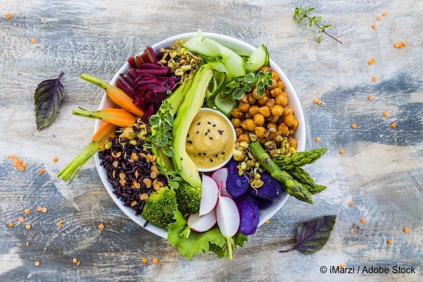

Protein Buddha bowl

Inspired by Mexican flavors, this bowl is great for those who like it spicy. The chipotle maple pecans make an excellent topping while adding some extra protein. The veggies and beans bake in the oven for about 25 minutes, and altogether this bowl takes about 40 minutes to make and one recipe serves 2.
Ingredients:
- 8oz firm tofu
- 1 sweet potato, cubed
- 1 onion
- 2 cloves garlic
- 1T vegetable oil
- 1 cup chickpeas
- 1 teaspoon chili powder
- 1 cup quinoa
- 1 cup leafy greens
- 1 avocado
- 1/4 cup carrots
Steps:
- Make the marinade: In a small bowl, combine the vegetable oil, sesame oil, hot sauce, thyme, paprika, and salt. Set aside.
- Add the marinade and tofu to a container and marinate for at least 30 minutes, or up to a day.
- Preheat the oven to 400ºF (200ºC).
- Lay the sweet potato, onion, and garlic on a baking sheet and drizzle with oil. Season with salt and pepper. Bake for 20-25 minutes.
- In a medium bowl, add the chickpeas, salt, pepper, chili powder, and garlic powder to a bowl and stir to combine.
- Transfer chickpeas to a skillet and cook over medium heat for about 10 minutes. Set chickpeas aside.
- Fry the tofu in the same pan for about 10 minutes on each side.
- Slice tofu to your preference.
- Combine the quinoa, greens, sweet potatoes, onions, chickpeas, carrots, tofu, and avocado in a medium-large bowl and top off with lemon juice